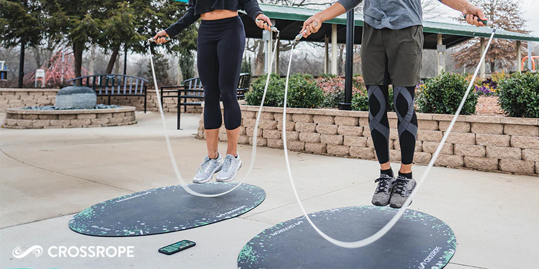
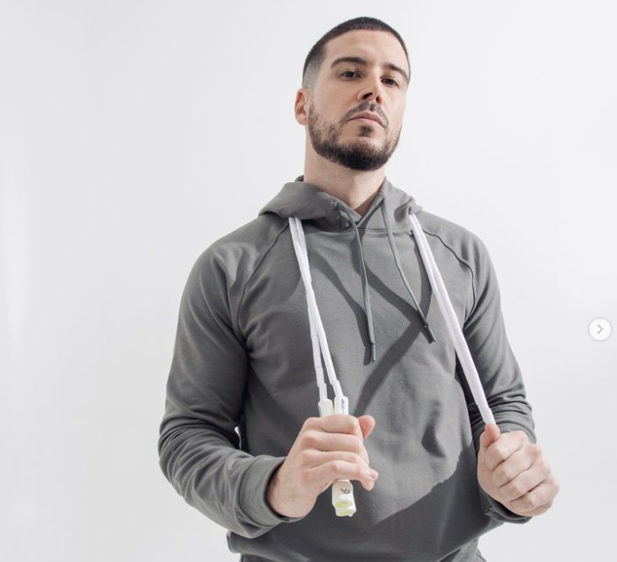
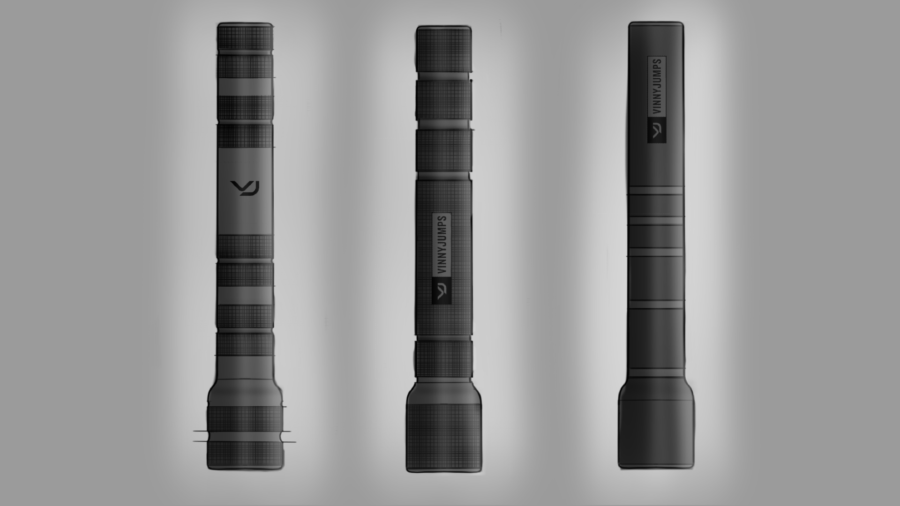
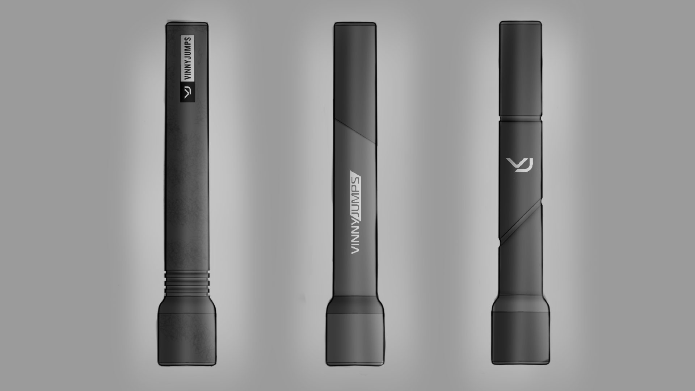
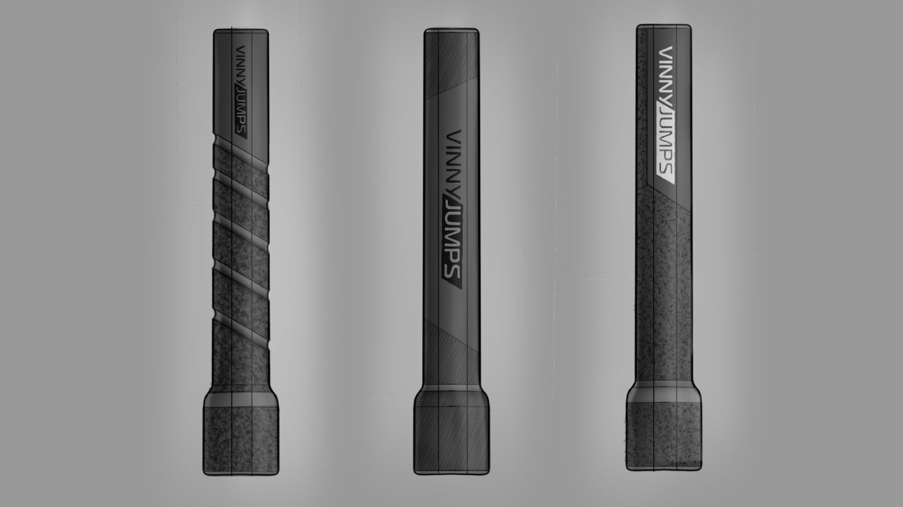
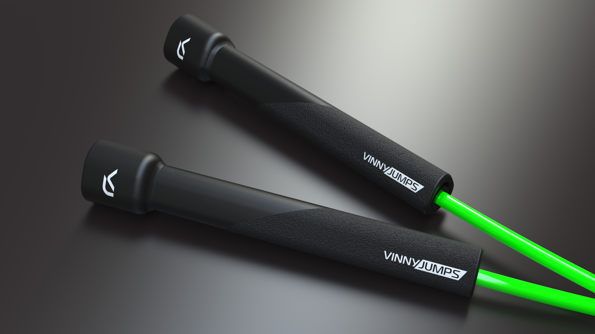
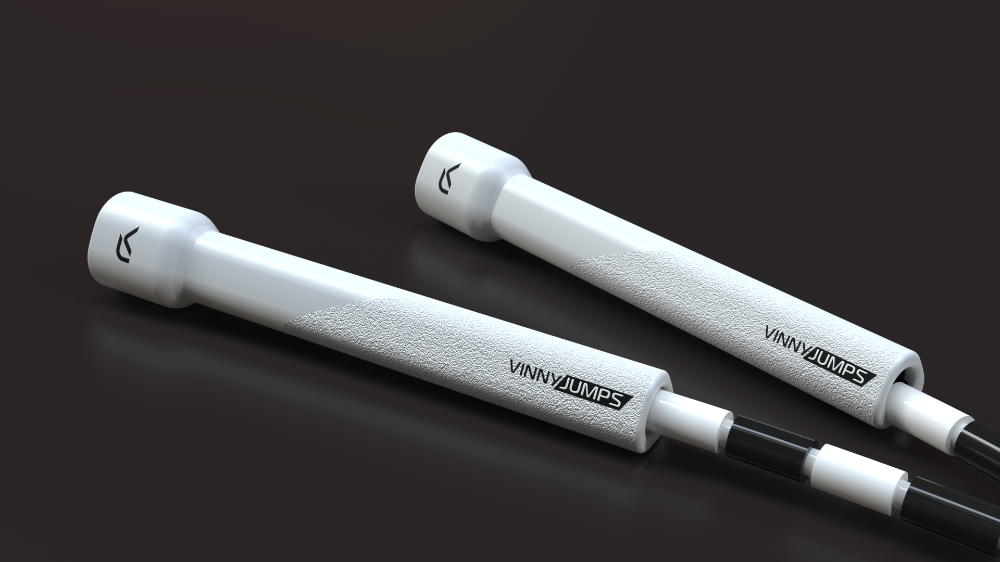
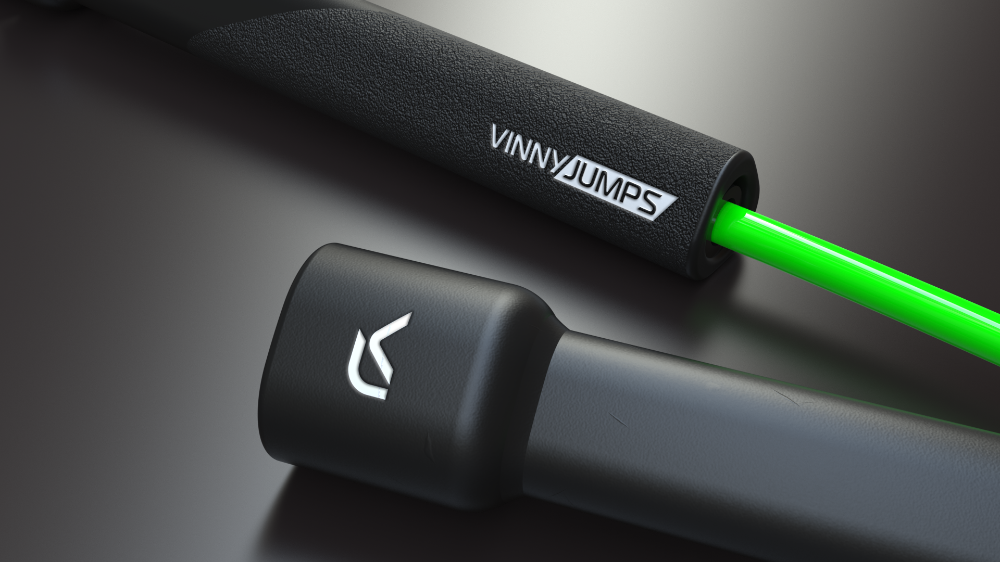
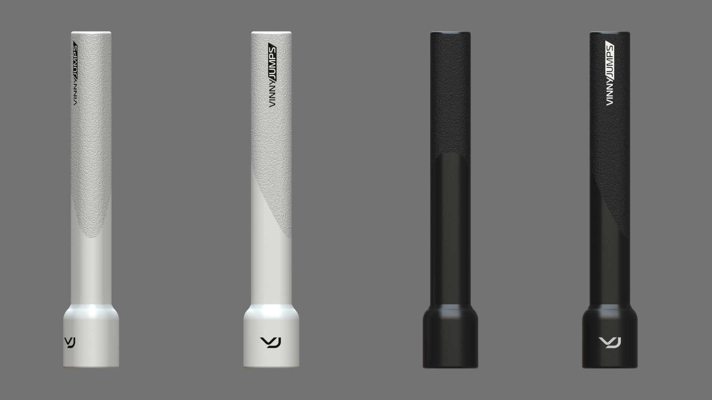

Exclusive designs for Crossrope and Vinny G
Crossrope has a long-term partnership with Laut Design and needed exclusive designs for their Crossrope enthusiast, reality star Vinny G. My contribution was to design the exclusive Crossrope handles for Vinny G's brand Vinny Jumps.
Initial sketch ideas were generated and communicated to Vinny and reworked until a suitable design fit the aesthetic and feel he wanted.
  Once a design was settled on, I generated renderings and CAD models so that Vinny would be happy and confident with the direction the designs were taking before they went into manufacturing.
   www.crossrope.com
Vinny Jumps Crossrope page